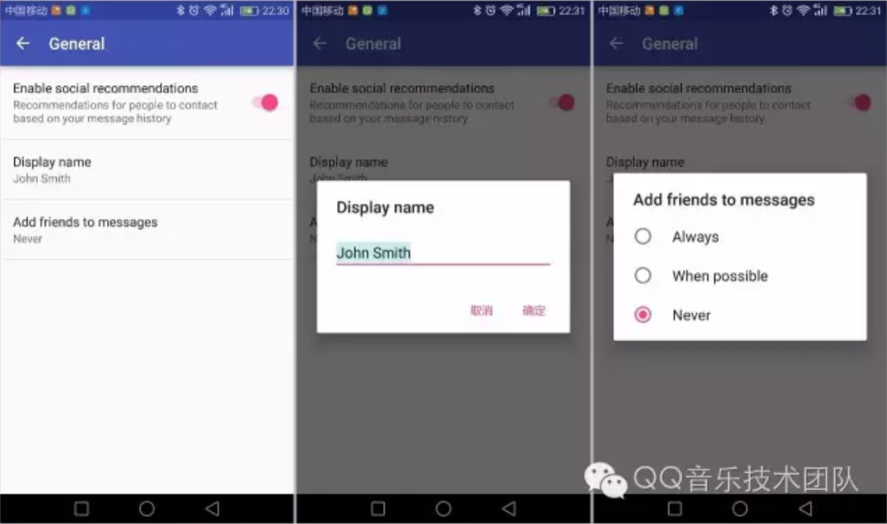
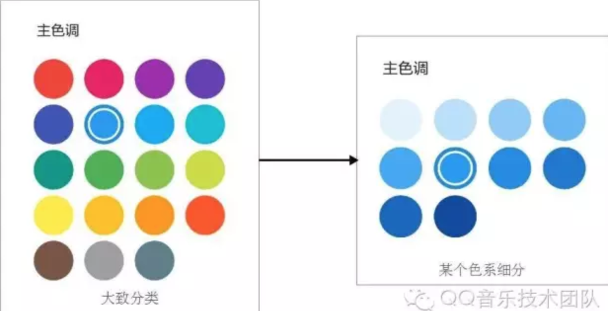
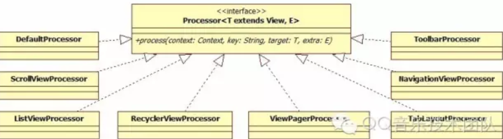
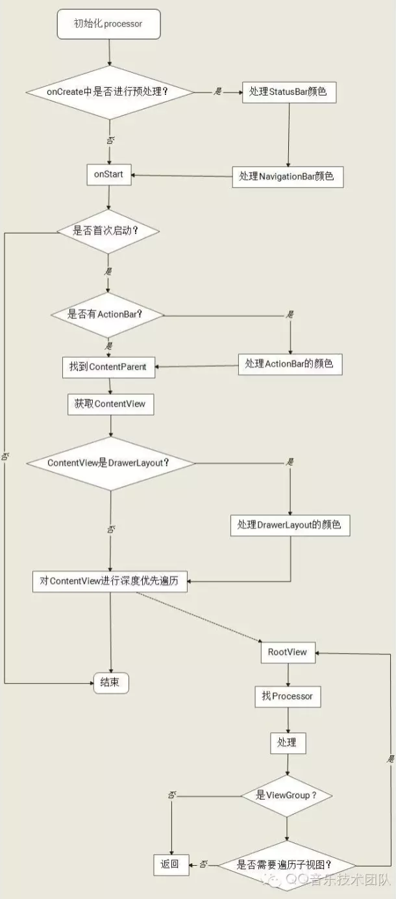

自定义Style和Theme
Style和Theme主要用来实现白天模式和夜间模式。
一个Style是一系列属性的集合，用来指定View或者Window的外观和格式。它可以指定的属性包括高度, Padding, 文字颜色，文字尺寸，背景颜色等等。
Style是在Xml资源文件中定义的，比如：
<style name="ListItemTitleStyle" parent="TextAppearance.AppCompat.Body1">
<item name="android:singleLine">true</item>
<item name="android:ellipsize">end</item>
<item name="android:textColor">?android:attr/textColorPrimary</item>
</style>
在布局文件中是这样使用的：
<TextView
android:id="@+id/text_item_title"
android:layout_width="match_parent"
android:layout_height="wrap_content"
style="@style/ListItemTitleStyle" />
这样一个Style就可以运用在多个地方，既可以统一样式，又可以减少代码量。
而Theme，其实就是一个Style，不同于我们上面提到对单一View的应用，Theme是应用于整个Activity或Application的。各位Android开发同学一定不陌生，在Manifest的Activity声明中就会经常看到。
<activity android:theme="@style/AppLightTheme.NoActionBar"/>
这样，AppLightTheme.NoActionBar中的所有属性都会应用在整个Activity中。
轻听这里，实现夜间模式分三步：
- 自定义Style
- 应用Style中的属性
- 设置Theme
自定义Style
我们这里，就是写两个Style ，然后各自有一套对应的颜色值。
简单介绍一下几个主要的颜色值：
- colorPrimary: 主题色
- colorAccent: 辅助色（或强调色）
- textColorPrimary: 主要的文字颜色，一般TextView的文字都是这个颜色
- textColorSecondary: 辅助的文字颜色，一般比textColorPrimary的颜色弱一点，用于一些弱化的表示
- windowBackground: Window的背景色
我们在资源文件中写对应的两套Style:
<style name="AppLightTheme" parent="Theme.AppCompat.Light.DarkActionBar">
<item name="colorPrimary">@color/colorPrimary</item>
<item name="colorAccent">@color/colorAccent</item>
<item name="android:textColorPrimary">@color/colorPrimaryTextBlack</item>
<item name="android:textColorSecondary">@color/colorSubTextBlack</item>
<item name="android:windowBackground">@color/white</item>
</style>
<style name="AppDarkTheme" parent="Theme.AppCompat.DayNight.DarkActionBar">
<item name="colorPrimary">@color/darkColorPrimary</item>
<item name="colorAccent">@color/darkColorAccent</item>
<item name="android:textColorPrimary">@color/white</item>
<item name="android:textColorSecondary">@color/colorSubTextWhite</item>
<item name="android:windowBackground">@color/dark_bg</item>
</style>
细心的同学会发现，Style里的属性，有的前面会以“android:”开头，如android:textColorPrimary，有的则没有，如colorPrimary。
以“android:”开头的属性，是系统的属性。而另一种属于自定义的属性，在资源文件中声明如下：
<attr name="minibar_background" format="color" />
format包括boolean, color, dimension, enum, flag, float, fraction, integer, reference, string。 在此就不赘述了，这是它们的一个相当灵活的使用方式。
应用Style中的属性
比如，colorAccent是在design包中定义的，属于自定义属性，在使用的时候，直接“?attr/”+属性名就可以了。
<ImageView
android:tint="?attr/colorAccent" />
系统属性要多加一个”android:”, 是”?android:attr/“+属性名。
<TextView
android:textColor="?android:attr/textColorPrimary"/>
这样，当指定了Theme之后，就会去相应的Style下面取对应的颜色值，从而呈现出不同的色彩。
设置Theme
在Manifest中设置是常见的方式。
<activity android:theme="@style/AppLightTheme.NoActionBar"/>
不过为了实现模式的切换，我们是在Activity的onCreate中进行的设置
protected void initTheme() {
if (MusicPreferences.getInstance().isNightMode()) {
setTheme(R.style.AppDarkTheme_NoActionBar);
} else {
setTheme(R.style.AppLightTheme_NoActionBar);
}
}
这样，通过给Activity设置不同的Theme，页面就能呈现出不同的颜色搭配。
问题
Style和Theme的方式实现简单，非常适用于模式较为固定的场景，如白天模式和夜间模式。
但是，轻听在白天的模式的时候的基础之上还有几种不同的主题色。
简单聊一下主题色。
主题色，即colorPrimary，是根据品牌形象，为App定义的一个主色调，一般应用于AppBar。
同时，有一个强调色，即colorAccent，是用在Checkbox或下划线等需要给人以提示作用的地方，起辅助的作用。
还有一个颜色是colorPrimaryDark，就是比colorPrimary稍微深一些，主要用在状态栏。

比如上图中，“蓝色”就是主题色，“红”色就是强调色。
主题色和强调色的色值可以不一样，也可以一样。在一般的设计中都是不同的。在轻听的设计中，为了突出品牌色，将强调色跟主题色统一设计成了一个颜色，所以你会看到，到处都是“绿”色。

在强调色跟主题色统一的情况下，6个主题色，6套Style，似乎还可以接受。
但是，万一以后设计同学良心发现了呢？6在6套主题色的基础之上再出6套强调色，那可就是36个Style。如果以后的调色方式再更为灵活，如：

我数学不好，谁帮我算算，别忘了加上强调色还得再平方一下……
如果给每一个主题色都写一套Style，工作量会很大，而且不灵活。这个时候Style就玩不转了。
我们需要一种更为灵活的方案。
动态配置主题色
动态配置主题色是借鉴了github开源控件app-theme-engine。在gradle中引入方式是:
compile('com.github.naman14:app-theme-engine:0.5.1@aar') {
transitive = true
}
由于找不到这个项目维护的地址，所以我们自己进行了扩展和优化。
主要由三个模块组成
- 颜色配置
- 颜色处理器
- 遍历逻辑控制器
颜色配置
颜色配置主要负责存储颜色值。
因为这里存储数据较小，而且简单，所以用SharedPreference来存储，稍加封装就可以。
颜色处理器
颜色处理器Processor主要负责对每一个View的各种颜色进行设置。
首先，定义一个接口
public interface Processor<T extends View, E> {
void process(@NonNull Context context, @Nullable String key, @Nullable T target, @Nullable E extra);
}
process方法就是来处理视图颜色的。
其中target就是要传入的视图，这里使用泛型，在各个派生的Processor中具体实现。
以下是几个主要的Processor。

其中DefaultProcessor是默认Processor，可以处理绝大部分的变色情况。其他几种，如他们的名字一样，会额外再处理他们特定的情况。
Processor的处理方式分三步：
- 给View设置tag
- 解析View的tag
- 根据具体的tag进行颜色的设置
以DefaultProcessor为例。有一个TextView，我们要使他的文字颜色为强调色。
首先，给View设置一个tag，”text_accent_color”。如果有多个tag，以逗号分隔。
<TextView
android:tag="text_accent_color"
/>
然后在process方法中将tag解析出来
public void process(@NonNull Context context, @Nullable String key, @Nullable View view, @Nullable Void extra) {
if(view != null && view.getTag() != null && view.getTag() instanceof String) {
String tag = (String)view.getTag();
if(tag.contains(",")) {
String[] splitTags = tag.split(",");
int len = splitTags.length;
for(int i = 0; i < len; ++i) {
String part = splitTags[i];
processTagPart(context, view, part, key);
}
} else {
processTagPart(context, view, tag, key);
}
}
}
这里会根据分隔符（逗号）来对tag的数量进行解析，然后依次根据每个tag依次处理。
在处理方法processTagPart中，会找到”text_accent_color”相对应的处理逻辑
if (view instanceof TextView) {
((TextView) view).setTextColor(Config.accentColor(context, key));
}
Config.accentColor(context, key)的作用就是从颜色配置模块中读取当前的强调色。
其他一些稍微复杂一点的情况，则可以使用相对应的Processor去进行特殊的处理。
例如，ViewPagerProcessor。ViewPager在滑动边界的时候会有一个边界反馈的效果，如下图：
这里需要特殊处理一下。ViewPager中，负责两个边缘效果的是EdgeEffectCompat。
private EdgeEffectCompat mLeftEdge;
private EdgeEffectCompat mRightEdge;
EdgeEffectCompat是一个对系统版本做兼容性处理的类，里面有真正的边缘效果模块EdgeEffect
public final class EdgeEffectCompat {
private Object mEdgeEffect;
}
注意到，这两处都是私有的，所以我们必须通过两次反射来获取EdgeEffect，然后更改颜色。
首先，通过反射获取ViewPager的左右EdgeEffectCompat。
public static void setEdgeGlowColor(@NonNull ViewPager viewPager, @ColorInt int color) {
if(Build.VERSION.SDK_INT >= 21) {
try {
Field edgeLeft = ViewPager.class.getDeclaredField("mLeftEdge");
edgeLeft.setAccessible(true);
Field edgeRight = ViewPager.class.getDeclaredField("mRightEdge");
edgeRight.setAccessible(true);
EdgeEffectCompat ee = (EdgeEffectCompat)edgeLeft.get(viewPager);
if (ee != null) {
setEdgeGlowColor(ee, color);
}
ee = (EdgeEffectCompat)edgeRight.get(viewPager);
if (ee != null) {
setEdgeGlowColor(ee, color);
}
} catch (Exception e) {
e.printStackTrace();
}
}
}
然后再获取真正的EdgeEffect，并更改颜色。
private static void setEdgeGlowColor(@NonNull EdgeEffectCompat edgeEffect, @ColorInt int color) throws Exception {
if(Build.VERSION.SDK_INT >= 21) {
Field field = EdgeEffectCompat.class.getDeclaredField("mEdgeEffect");
field.setAccessible(true);
EdgeEffect effect = (EdgeEffect) field.get(edgeEffect);
if (effect != null) {
effect.setColor(color);
}
}
}
这样边缘效果的颜色就修改好啦。
遍历逻辑
遍历逻辑控制器主要负责对整个页面的所有View进行遍历，并进行颜色处理。
以下是遍历逻辑：

- 初始化Processor
private static void initProcessors() {
mProcessors = new HashMap();
mProcessors.put("[default]", new DefaultProcessor());
mProcessors.put(ScrollView.class.getName(), new MusicScrollViewProcessor());
mProcessors.put(ListView.class.getName(), new MusicListViewProcessor());
mProcessors.put(RecyclerView.class.getName(), new MusicRecyclerViewProcessor());
mProcessors.put(Toolbar.class.getName(), new MusicToolbarProcessor());
mProcessors.put(NavigationView.class.getName(), new MusicNavigationViewProcessor());
mProcessors.put(TabLayout.class.getName(), new MusicTabLayoutProcessor());
mProcessors.put(ViewPager.class.getName(), new MusicViewPagerProcessor());
}
将各Processor实例化后存入HashMap，key为类名。
-
开始刷新的时机是onStart，因为这个时候布局已经基本初始化完毕。我们会判断Activity之前是否start过，避免重复的进行处理。至于在此之后生成的布局，会单独对其进行一次刷新。
-
从流程图中可以看出，在处理ContentView之前，我们会单独处理几个特殊的布局。
StatusBar是顶部状态栏，NavigationBar是底部导航栏，有时我们会希望让这两处也兼容主题色。
如果用到ActionBar，也需要处理一下。不过MD的实现中，一般都是NoActionBar的，而用我们自己布局的ToolBar来代替。
在有侧边栏的页面中，根布局一般都是DrawerLayout，在侧边栏滑出的时候，可以设置DrawerLayout的状态栏颜色。 -
找我们自己的根布局：ContentView
ContentView就是我们用setContentView设置的布局，它上面还有ContentParent，DecorView，Window。
直接根据资源id找？不现实，因为每个Activity的ContentView资源id基本都不一样的。
这里采取一种迂回的方式，先找到ContentView的父布局ContentParent。
我们看setContentView的代码：
@Override
public void setContentView(int resId) {
ensureSubDecor();
ViewGroup contentParent = (ViewGroup) mSubDecor.findViewById(android.R.id.content);
contentParent.removeAllViews();
LayoutInflater.from(mContext).inflate(resId, contentParent);
mOriginalWindowCallback.onContentChanged();
}
可以看到，实际上ContentParent的资源id是固定的：android.R.id.content。
系统会先把ContentParent的子视图清除，然后通过LayoutInflater的inflate方法将我们指定布局的视图解析出来并添加到ContentParent中。
那么我们就可以根据android.R.id.content先找到ContentParent，进而找到ContentView
ViewGroup contentView = (ViewGroup) ((ViewGroup) activity.findViewById(android.R.id.content)).getChildAt(0);
- 获取Processor
根据View的类名获取Processor
Processor processor = mProcessors.get(viewClass.getName());
if(processor != null) {
return processor;
} else {
Class current = viewClass;
do {
current = current.getSuperclass();
if(current == null) {
break;
}
processor = mProcessors.get(current.getName());
} while(processor == null);
if (processor == null) {
mProcessors.get("[default]")
}
return processor;
}
从HashMap中获取对应的Processor，如果找不到则根据父类的名字查找。找到之后就可以调用process方法进行处理。
- 遍历
这里会从ContentView开始进行深度优先遍历，处理所有的视图。
有一些特殊的ViewGroup不需要遍历其子布局，例如TabLayout，因为其自己的方法已经满足绝大部分的情况。
结语
以上，就是两种变色方案的具体实现。
- 自定义Style和Theme实现简单，整洁，适用于模式较为固定的场景。
- 动态配置主题色实现起来略微复杂，但是比较灵活，适用于主题色较多的场景。
将这两种方案结合，就实现了轻听的变色。